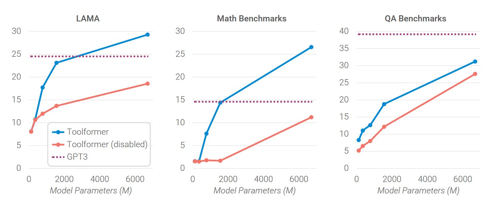

<!DOCTYPE html>
<html lang="en">
  <head>
    <meta charset="utf-8" />
    <meta name="viewport" content="width=device-width, initial-scale=1.0, maximum-scale=1.0, user-scalable=no" />

    <title>Toolformer</title>
    <link rel="shortcut icon" href="./favicon.ico" />
    <link rel="stylesheet" href="./dist/reset.css" />
    <link rel="stylesheet" href="./dist/reveal.css" />
    <link rel="stylesheet" href="./dist/theme/serif.css" id="theme" />
    <link rel="stylesheet" href="./css/highlight/base16/zenburn.css" />


  </head>
  <body>
    <div class="reveal">
      <div class="slides"><section  data-markdown><script type="text/template">
<style type="text/css"> 
h1,h2,h3,h4,p{ 
  text-align: left; 
}
h1.c,h2.c,h3.c{
  text-transform: capitalize;
}
h1.n,h2.n,h3.n,h4.n{
  text-transform: none;
}
h3.small{
  font-size: 55px;
}
img{
  text-align:left;
}
img.center{
  display: block; /* This is important for margin:auto to work */
  margin-left: 100px;
}
img.fl{
  float:left;
}
img.logo{
  margin-top: -30px;
  margin-bottom: -10px;
  max-width: 20%; 
  height: 60px; 
}
div.sma{
  font-size:35px;
  margin:40px 10px;
}
p.right{
  text-align:right;
  margin-right:100px;
}
p.main{
  font-size:28px;
}
h2.center,h3.center{
  text-align:center;
}
img.tem{
  border-radius: 8pt;
  height:700px;
}
#outter{
  display:flex;
  justify-content: space-around;
}
div.outter{
  display:flex;
  justify-content: space-between;
}
div.inner{
  display:flex;
  flex-direction: column;
  align-items:start;
  justify-content: space-evenly;
}
div.inner1{
  display:flex;
  flex-direction: column;
  align-items:start;
  justify-content: center;
}
div.shell{
  margin-top: -100px;
  margin-left:70px;
}
#ref{
  margin-left:100px;
  margin-top: -100px;
}
#cat{
  display:flex;
  flex-direction: column;
  justify-content:center;
}
span.red{
  color: #EF5350;
}
</style> 

<div class="shell">
  <h2 class="c">Toolformer: Language Models Can Teach Themselves to Use Tools</h2>
  <br/>
  <div style="text-align:left">
  <ul>
      <li>Authors:&emsp;Timo Schick, Jane Dwivedi-Yu et al</li>
  </ul>
  <br/><br/>
  </div>
  <p class="right">汇报人：王小娅</p>
  <p class="right">汇报时间：6.6</p>
</div>


</script></section><section  data-markdown><script type="text/template">

<div class="shell" style="margin-top:-100px">
  <h2>OUTLINE</h2><br/>
  <h3 class="n">Background</h3>
  <h3 class="n">Approach</h3>
  <h3 class="n">Experiments</h3>
  <h3 class="n">Demonstration</h3>
  <h3 class="n">Summary</h3>
  

  <h3 class="n"></h3>
  <h4 class="n">&emsp;&emsp;</h4>
</div>

</script></section><section  data-markdown><script type="text/template">

<div class="shell" style="margin-top:-160px">
  
</div>

</script></section><section  data-markdown><script type="text/template">

<div class="shell">
<h1 class="c">Part Ⅰ. Background</h1>
</div>

</script></section><section  data-markdown><script type="text/template">

<div class="shell">
    <h3 class="n">Several inherent limitations of LMs</h3><br/>
    <p style="font-size:42px">1. inability to access up-to-date information</p>
    <p style="font-size:42px">2. tendency to hallucinate facts</p>
    <p style="font-size:42px">3. difficulties in understanding low-resource languages</p>
    <p style="font-size:42px">4. lack of skills to perform precise calculations</p>
    <p style="font-size:42px">5. Unawareness of the progression of time</p>
</div>

</script></section><section  data-markdown><script type="text/template">
<div class="shell">
    <h3 class="n">Existing approaches of equipping LMs with tools</h3><br/>
    <h4 class="n small">Drawback-1 : rely on large amounts of human annotations</h4>
    <p style="font-size:32px">Internet-Augmented Dialogue Generation(Komeili et al., 2022)</p>
    <p style="font-size:32px">LaMDA: Language Models for Dialog Applications(Thoppilan et al., 2022)</p><br/>
    <h4 class="n small">Drawback-2 : limit tool use to task-specific settings only</h4>
    <p style="font-size:32px">PAL: Program-aided Language Models(Gao et al.,2022)</p>
    <p style="font-size:32px">TALM: Tool Augmented Language Models(Parisi et al., 2022)</p>
</div>
</script></section><section  data-markdown><script type="text/template">

<div class="shell">
<h1 class="c">Part Ⅱ. Approach</h1>
</div>

</script></section><section  data-markdown><script type="text/template">

<div class="shell" >
  <div class="outter">
    <div id="inner">
    <h3 class="c">Constraints of tools for LMs</h3><br/>
    <p>1. Formal : Both their inputs and outputs can be represented as text sequences</p><br/><br/>
    <p>2. Inducible : Their intended use can be obtained by a few examples</p>
    </div>
    <div id="inner">
      
      
      
      
    </div>
  </div>
</div>

</script></section><section  data-markdown><script type="text/template">
<div class="shell">
  <h3 class="n">Five tools used in the paper : </h3><br/>
  <h4 class="n small">1. Question Answering</h4>
  <p style="font-size:32px">A question answering system based on Atlas (Izacard et al., 2022)</p>
  <h4 class="n small">2. Wikipedia Search</h4>
  <p style="font-size:32px">Given a search term, returns short text snippets from Wikipedia</p>
  <h4 class="n small">3. Calculator</h4>
  <p style="font-size:32px">Only support the four basic arithmetic operations</p>
  <p style="font-size:32px">Results are rounded to two decimal places</p>
  <h4 class="n small">4. Calendar</h4>
  <p style="font-size:32px">Returns the current date without taking any input</p>
</div>

</script></section><section  data-markdown><script type="text/template">

<div class="shell">
  <h4 class="n small">5. Machine Translation System</h4>
  <p style="font-size:32px">200 languages(low-resource) to English</p>
  <p style="font-size:32px">fast-Text classifier + NLLB(multilingual MT model)</p><br/>
  
</div>

</script></section><section  data-markdown><script type="text/template">

<div class="shell">
  <h3 class="n small">How to obtain the augmented dataset for model finetuning?</h3>
  <p>(take QA system for example)</p>
  

</div>

</script></section><section  data-markdown><script type="text/template">

<div class="shell" >
  <div id="outter">
    <div id="inner">
      <h4 class="c">Step-1 : Sampling API calls</h4>
      <div>
      <p>The probability that model M assigns-<br/> to starting an API call at position i</p>
      
      <p>Given a sampling threshold, keep all positions</p>
      
      <p>If the size of I > k, only keep the top <span class="red">k</span></p></br>
      <p>For each position, obtain up to <span class="red">m</span> API calls</p>
      </div>
    </div>
    <div>
       
    </div>
  </div>
</div>

</script></section><section  data-markdown><script type="text/template">

<div class="shell">
  <h3 class="c">Step-2 : Executing API Calls</h3>
  <p>How this is done depends entirely on the API itself</p><br/>
  <h3 class="c">Step-3 : Filtering API Calls</h3>
  <p>Based on whether the results reduce loss</p>
  
  <p>Keep api calls for which</p>
  
</div>

</script></section><section  data-markdown><script type="text/template">

<div class="shell">
    <h3 class="c">Model finetuning</h3>
    <p>Use the dataset argmented with api calls to finetune LMs</p>
    <p>With a standard language modeling objective</p>
    <p>Enables LMs to decide when and how to use with tool</p><br/>
    <h3 class="c">Inference</h3>
    <p>interruption(s) for api calls</p>
    
</div>

</script></section><section  data-markdown><script type="text/template">

<div class="shell">
<h1 class="c">Part Ⅲ. Experiments</h1>
</div>

</script></section><section  data-markdown><script type="text/template">

<div class="shell"  style="margin-top:-150px">
  
  <div id="inner" style="margin:20px 50px">
      <h2 class="n">Models used in the experiments</h2><br/>
      <p>GPT-J: A 6.7B parameter, autoregressive text generation model trained on The Pile.</p>
      <p>GPT-J + CC: GPT-J finetuned on subset of CCNet without any API calls</p>
      <p>Toolformer: GPT-J finetuned on subset of CCNet argumented with API calls</p>
      <p>Toolformer (disabled): same as Toolformer except API calls disabled during decoding</p>
      <hr>
      <p>OPT: 66B (Zhang et al., 2022)</p>
      <p>GPT-3: 175B (Brown et al., 2020)</p>
  </div>
</div>

</script></section><section  data-markdown><script type="text/template">

<div class="shell" >
  <div id="outter">
    <div id="inner">
      <h3 class="c">Task-1: LAMA</h3>
      <div>
      <p>task description: complete a short statement with a missing fact</p>
      <p>benchmarks: SQuAD, GoogleRE and T-REx subsets of the LAMA benchmark</p>
      <p>metric: whether the correct word is within the first five words predicted by the model</p>
      <p>disabled tool: Wikipedia Search API</p>
      <p>vital tool: the QA tool</p>
      </div>
    </div>
    <div><br/><br/><br/>
      
    </div>
  </div>
</div>

</script></section><section  data-markdown><script type="text/template">

<div class="shell" >
  <div id="outter">
    <div id="inner">
      <h3 class="c">Task-2: Math Datasets</h3>
      <div>
      <p>task description: mathematical reasoning</p>
      <p>benchmarks:ASDiv, SVAMP and MAWPS</p>
      <p>metric: whether the first number is correct</p>
      <p>vital tool: the calculator tool</p>
      </div>
    </div>
    <div><br/>
      
    </div>
  </div>
</div>

</script></section><section  data-markdown><script type="text/template">

<div class="shell" >
  <div id="outter">
    <div id="inner">
      <h3 class="c">Task-3: Question Answering</h3>
      <div>
      <p>benchmarks: Web Questions, Natural Questions and TriviaQA</p>
      <p>metric: whether the first 20 words predicted by a model contain the correct answer</p>
      <p>disabled tool: the QA tool</p>
      <p>vital tool: Wikipedia Search API</p>
      </div>
    </div>
    <div><br/><br/>
      
    </div>
  </div>
</div>

</script></section><section  data-markdown><script type="text/template">

<div class="shell" >
  <div id="outter">
    <div id="inner">
      <h3 class="c">Task-4: Multilingual Question Answering</h3>
      <div>
      <p>benchmarks: MLQA in Arabic, German, Spanish, Hindi, Vietnamese, Chinese</p>
      <p>metric: the percentage of times the model’s generation, capped at 10 words, contains the correct answer.</p>
      <p>vital tool: the machine translation tool</p>
      </div>
    </div>
    <div><br/>
      
    </div>
  </div>
</div>

</script></section><section  data-markdown><script type="text/template">

<div class="shell" >
  <div id="outter">
    <div id="inner">
      <h3 class="c">Task-5: Temporal Datasets</h3>
      <div>
      <p>task description: knowing the current date is required to answer questions</p>
      <p>benchmarks: TEMPLAMA and DATESET</p>
      <p>metric: whether the correct word is within the first five words predicted by the model</p>
      <p>vital tool: the calendar tool</p>
      </div>
    </div>
    <div><br/>
      
    </div>
  </div>
</div>

</script></section><section  data-markdown><script type="text/template">

<div class="shell" >
  <div id="outter">
    <div id="inner" margin-left="100px">
      <h4 class="n">Does the approach hurt the model's core language modeling ability?</h4>
      <br/>
      <div>
        <p>benchmarks: WikiText and another subset of CCNet</p>
        <p>metric: perplexity</p>
        
      </div>
    </div>
    <div><br/><br/>
      
      <p><p>
    </div>
  </div>
</div>

</script></section><section  data-markdown><script type="text/template">

<div class="shell" >
  <div class="inner">
    <h4 class="n">How the ability to use tools varying the models' size?</h4>
    
    <p>baseline models: GPT-2 family - 124M, 355M, 775M, 1.6B</p>
  </div>
</div>

</script></section><section  data-markdown><script type="text/template">

<div class="shell">
<h1 class="c">Part Ⅳ. Demonstration</h1>
</div>

</script></section><section  data-markdown><script type="text/template">
<a href="https://www.zhihu.com/zvideo/1618020255145709569?utm_source=wechat_session&utm_medium=social&utm_oi=1200479133018644480">toolformer在线演示(47s)</a>
</div>

</script></section><section  data-markdown><script type="text/template">

<div class="shell">
<h1 class="c">Part Ⅴ. Summary</h1>
</div>

</script></section><section  data-markdown><script type="text/template">

<div class="shell" >
  <div id="inner">
    <h2 class="n">Strengths</h2>
    <p>Substantial experiment and tasks (3 groups)</p>
    <p>Self-annotation echoes "teach themselves" (kill two birds with one stone)</p><br/>
    <h2 class="n">Weaknesses</h2>
    <p>inability to use tool in a chain</p>
    <p>inability to use tool in an interactive way</p>
    <p>be sensitive to the exact words</p>
    <p>sample-inefficient</p>
  </div>
</div>


</script></section><section  data-markdown><script type="text/template">

<div class="shell" >
  <div id="inner">
    <h2 class="n">Insights</h2><br/>
    <p>1. Finetune LMs in a self-annotation and self-supervised way</p><br/>
    <p>2. Let LMs cosplay to finish a task cooperatively</p><br/>
  </div>
</div>


</script></section><section  data-markdown><script type="text/template">


*<div><h1 class="n" style="text-align: center">Thanks</h1></div>*
</script></section></div>
    </div>

    <script src="./dist/reveal.js"></script>

    <script src="./plugin/markdown/markdown.js"></script>
    <script src="./plugin/highlight/highlight.js"></script>
    <script src="./plugin/zoom/zoom.js"></script>
    <script src="./plugin/notes/notes.js"></script>
    <script src="./plugin/math/math.js"></script>
    <script>
      function extend() {
        var target = {};
        for (var i = 0; i < arguments.length; i++) {
          var source = arguments[i];
          for (var key in source) {
            if (source.hasOwnProperty(key)) {
              target[key] = source[key];
            }
          }
        }
        return target;
      }

      // default options to init reveal.js
      var defaultOptions = {
        controls: true,
        progress: true,
        history: true,
        center: true,
        transition: 'default', // none/fade/slide/convex/concave/zoom
        slideNumber: true,
        plugins: [
          RevealMarkdown,
          RevealHighlight,
          RevealZoom,
          RevealNotes,
          RevealMath
        ]
      };

      // options from URL query string
      var queryOptions = Reveal().getQueryHash() || {};

      var options = extend(defaultOptions, {"width":1780,"height":620,"margin":0.04,"progress":true,"transition":"none","slideNumber":true}, queryOptions);
    </script>


    <script>
      Reveal.initialize(options);
    </script>
  </body>
</html>
